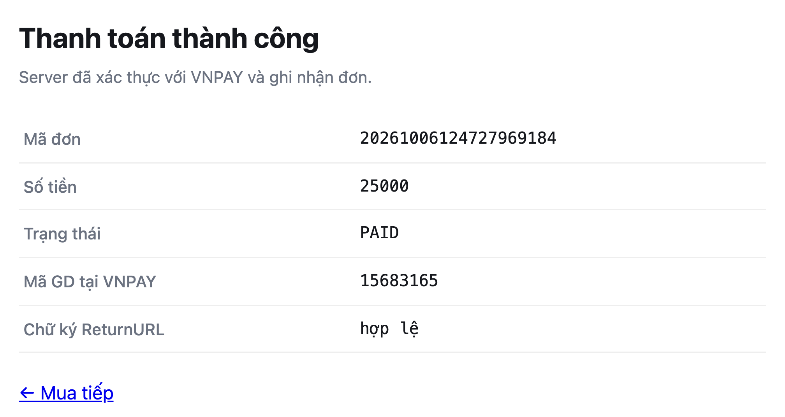

Terminal 2 sẽ hiện
[10:21:40] IPN 20261010102118733051 -> PAID 15900123
- Lần này VNPAY tự gọi về qua kênh 3
- Khách có tắt tab thì đơn vẫn PAID
- Mở 127.0.0.1:4040 xem request IPN: phương thức GET, tham số trên query string

[10:21:40] IPN 20261010102118733051 -> PAID 15900123
